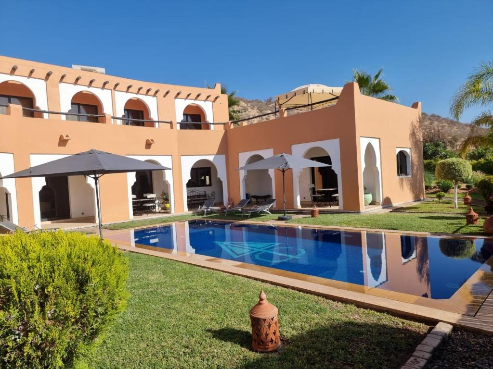
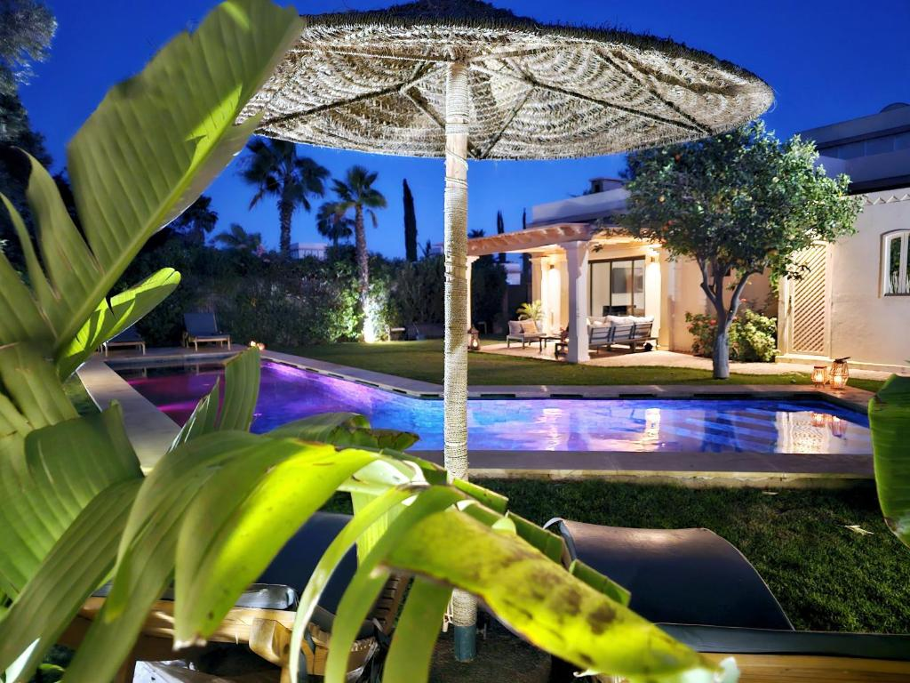
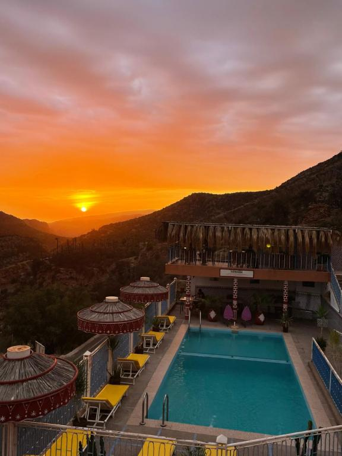
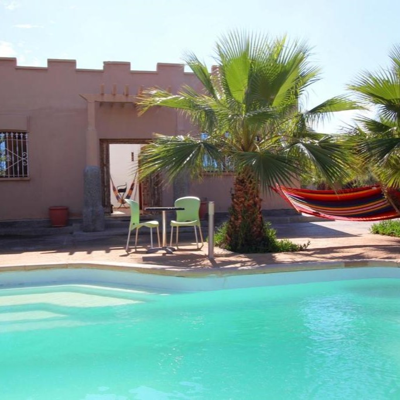
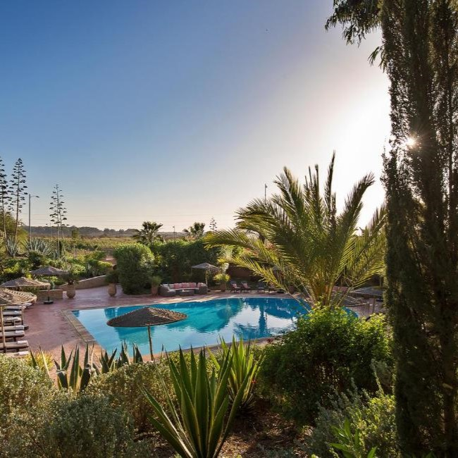

Hotels & Auberges
Riad Asmaa

Nichée dans un cadre paisible, cette maison d’inspiration berbère allie charme traditionnel et
confort moderne. Entourée de jardins verdoyants, elle invite à la détente entre piscine, hammam et
cuisine aux saveurs locales. Un véritable cocon où sérénité et hospitalité se rencontrent.
Villa Naya

Villa Naya séduit par son intimité totale et sa piscine chauffée sans vis-à-vis, parfaite pour se
détendre en toute tranquillité. Son design moderne et lumineux, ses deux terrasses et la possibilité
de savourer des plats faits maison en font un véritable refuge pour couples.
Auberge Les Montagnes du Paradis

Perchée dans la vallée du Paradis, cette auberge offre des vues spectaculaires sur les montagnes et
un séjour proche de la nature. Sa cuisine marocaine variée et ses petits-déjeuners végétariens ou
halal en font un lieu unique pour les amateurs de gastronomie et de sérénité.
Maison d hôtes Bungalow Villa Hammam

Alliant détente et confort, cette maison d’hôtes à Agadir séduit par son hammam, sa piscine et son
spa offrant une véritable parenthèse de bien-être. Ses bungalows climatisés et sa cuisine partagée
créent une ambiance conviviale et chaleureuse. Idéale pour se ressourcer dans un cadre paisible.
Dar Maktoub

Face à une réserve naturelle, le Riad Dar Maktoub offre un écrin de verdure à quelques minutes du
centre d’Agadir. Son jardin luxuriant, sa grande piscine et sa cuisine maroco-française raffinée en
font une adresse de charme. Idéal pour un séjour alliant nature, détente et élégance.